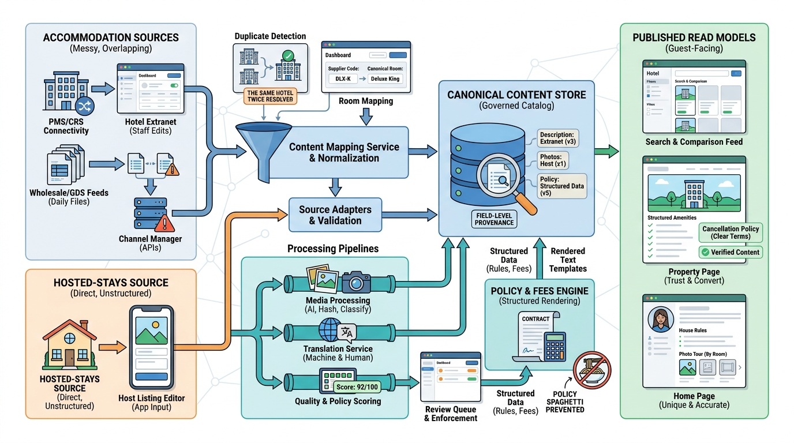

Part II — SUPPLY: Properties, Homes and the Partners Behind Them
Describing a Stay: Content, Media and Property Mapping

Image generated by Google Gemini (gemini-3-pro-image-preview)
Part II — SUPPLY: Properties, Homes and the Partners Behind Them

Image generated by Google Gemini (gemini-3-pro-image-preview)